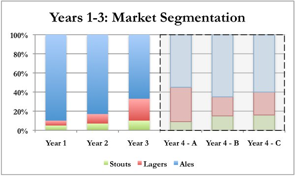
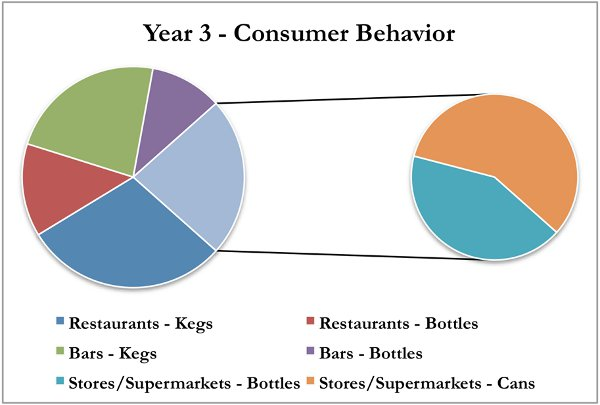

Last year, 32.8 million liters of beer were consumed in Megapolis. Lagers and stouts accounted for 33% of the total consumption, with ales accounting for 67%. While one ale machine run at full capacity (1.5 million liters) could account for up to 5.2% of the total demand three years ago (28.8 million liters of ale consumed), due to the changes in consumer demand this same capacity would have accounted for 6.8% last year (22 million liters of ale consumed). More drastically, a lager machine’s maximum production capacity (900,000 liters per year) would have accounted for over 56% of total demand three years ago (1.6 million liters of lager consumed), but only 12% last year (7.5 million liters of lager consumed). The following graphs illustrate these differences:
As your business continues to grow, you are considering purchasing additional brewing and packaging equipment. In your current warehouse, you have the space to hold up to five brewing machines. You have approached the same vendor that you did three years ago and have been told that a large quantity of both ale and lager brewing equipments are available. Since you are a repeat customer, the vendor is offering you the same price per machine: $100,000. The capacity of each machine is the same: 100,000 liters per cycle. If you have the capacity to purchase additional machines, you should again consider the current demand levels for lagers and ales and the overall annual beer consumption. Before deciding if and what machines to purchase, you should read the information included in the Production Volume section. Note that an increase in machinery will also lead to an increase in rent, since you will have to pay for the additional floor space.
In addition to brewing equipment, the vendor has also asked about your packaging equipment. If you are not already packaging kegs, bottles, and cans, you have the opportunity now to purchase the necessary equipment. The prices are the same as they were in Year 1.
When you notified your landlord of the possibility of purchasing additional machinery, he brought up the possibility of adjusting your Finished Goods Storage Space. Recall that this is based on a percentage of your maximum annual output. You can decide to leave the percentage the same as your initial decision or adjust it if you feel you have too much or too little space.
As you are considering another capital investment, you have also approached your bank about taking on additional long-term debt. Based on the success of your brewery over the past few years, they have again given you the option to borrow up to $2,000,000. The interest rate on the loan will depend on two factors: the amount withdrawn and how much your brewery has had to rely on the emergency line of credit the bank provided you when you first opened your brewery. The lowest available interest rate is 5.00%, with premiums added depending on these two factors. You need to decide if you would like to take on additional long-term debt and, if so, the amount.
You continue to have the option to utilize the short-term, asset-based line of credit that the bank offered you last year. If you decide not to use the line of credit this year, you will have to pay back whatever you used last year. However, you will not have to pay any interest expense. On the other hand, if you foresee some financing needs for your business, this line of credit is a relatively cheap way of funding new opportunities.
Megapolis is continuing to change for the better. You have heard that the community is predicted to become a technological center for the region. Further, the city hall recently approved a three-year project to create a new and larger highway to make it easier for people to commute to Megapolis for work and to increase trade in the region. With this momentum, the newspaper recently wrote an article which suggested that the population of Megapolis could grow 5 – 8% over the next few years and per capita income is expected to continue increasing. This would lead to overall growth in the beer market, which could lead to increased sales for all breweries even if market shares remained constant.
While the beer market may be growing overall, there are some interesting changes in the market segmentation. In Year 3, lagers grew to account for 23% of the beer market. For the most recent two-year period, this represents over 350% growth for this market segment. Stouts have also continued to grow, though at a more tempered pace than lagers. Reporters have begun to ask probing questions of ale brewers about the unexpected growth in demand for these two categories. Some ale producers call it a temporary change and state that consumers will soon revert back to primarily consuming ale. Other ale producers are building out their lager brewing capacity to expand their product lines, indicating a long-term belief in lagers as a significant revenue opportunity.
At the request of your staff, you purchased three new market reports from the same three companies that provided the reports you analyzed when you started your brewery. While none of the companies predict the market segmentation returning to historic levels, they do not agree on how quickly the segments will continue to shift. Company A forecasts another large increase in lagers, while Company B and Company C suggest more modest changes in the coming year. The following chart illustrates their forecasts.

Regardless of how quickly the lager market grows, the shrinking ale market means that all the existing ale producers will be fiercely competitive to maintain their share of the market. Given its fragmentation, existing ale brewers can expect to hold 5-8% of the market. Further, there will be increased competition in the lager market, as other breweries expand their capacities to include lager brewing. Market sources suggest that breweries that have already been producing lager for a few years will be much better situated to continue capturing market share. Depending on your position in the market during the previous year, you may be able to capture up to 14% of the market. Taking into account this information and your decision regarding new machinery purchasing, you need to prepare your production forecast for this year.
As the technology companies have begun to thrive, many of their employees have experienced pay raises. This has led to an increased tendency to dine out at restaurants and bars, which is also leading to the construction of new restaurants and bars in anticipation of continued demand. While this shifts the overall location of beer consumption, trends noted in previous years concerning packaging type relative to the type of beer are remaining somewhat static. Using the data below to predict consumer preference in the coming year – and keeping in mind the preference to drink lagers from a keg or bottle rather than a can – you need to decide on how you will package your produced beer this year.

As your business grows, so will your staff. Please review the information included in Year 3 to make your staffing decisions for this year.
Given the rapidly changing market segmentation and the increased likelihood of heightened competition from other breweries, activities that help raise awareness about your product will help to retain your existing customer base and also serve to attract new customers. At this point in your business’s life cycle, Product Development is still important, but it is secondary to Marketing and Promotional Activities. Community Development should always be a focus for an organization, especially once the business is profitable.